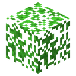
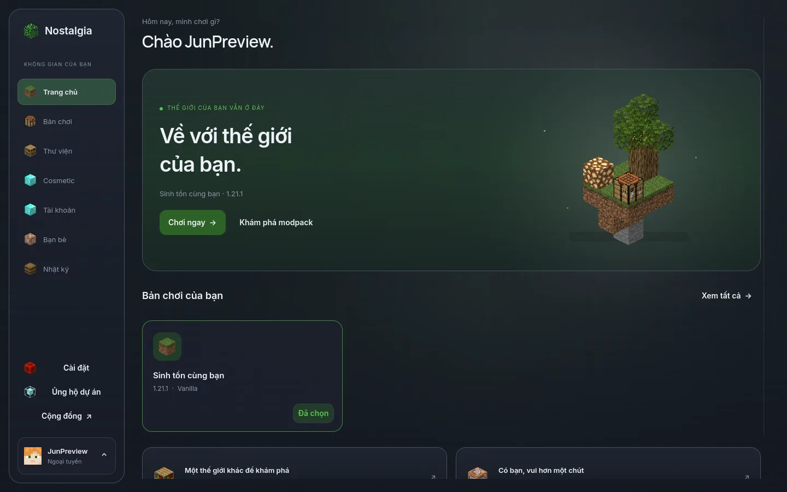
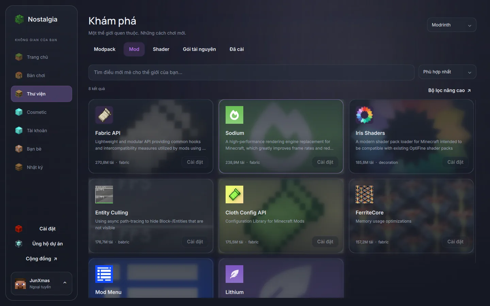

Thư viện trong tầm tay
Mods, modpack, shader và resource pack. Xem thông tin, chọn phiên bản phù hợp rồi cài ngay trong launcher.

Nostalgia Tải launcher
Một nơi gọn gàng cho những cuộc phiêu lưu dài.
Từ bản chơi đầu
tiên đến thế giới cùng bạn bè.
Miễn phí để bắt đầu · Windows, Linux & macOS

CHỌN CÁCH CHƠI CỦA BẠN
QUEN THUỘC, THEO MỘT CÁCH MỚI
Bản chơi, nội dung và người bạn muốn gặp.
Mọi thứ ở đúng chỗ,
để bạn dành thời gian cho game.
Mods, modpack, shader và resource pack. Xem thông tin, chọn phiên bản phù hợp rồi cài ngay trong launcher.
Tách nội dung và cấu hình, ghim bản yêu thích, nhập từ launcher khác và sao lưu trước khi thử một điều mới.
Kết bạn, chat và mời chơi. Tài khoản Nostalgia dùng Google; tài khoản Minecraft được quản lý riêng.
MỘT LỚP KÍNH. MỘT THẾ GIỚI MỚI.
Màu quen thuộc, bề mặt mica và chuyển động nhẹ nhàng.
Không
gian để nội dung Minecraft được nổi bật.

CÙNG MỘT MODPACK. CÙNG MỘT CUỘC VUI.
Host với Plus có thể chia sẻ modpack cho bạn bè. Máy khách chọn nội dung cần cài, xem cảnh báo trước khi nhận file và cập nhật vào đúng bản chơi ở lần sau.
Khám phá các gói hỗ trợBạn quyết định những gì được đồng bộ.
Chỉ nhận mods và file custom từ người bạn tin tưởng. Đồng bộ không bảo đảm file an toàn.
Minh hoạ luồng đồng bộ · Không phải cửa sổ launcher
CUỘC PHIÊU LƯU TIẾP THEO
Chọn đúng hệ điều hành, tải về và bắt đầu.
Đang dò bản phát hành mới nhất…
Tải launcher
Linux Mint: chọn Linux và tải .deb ở mục định dạng khác.
Bản
thử nghiệm và bản nháp không được chọn làm bản tải mặc định.
KHÔNG CẦN VỘI
Chọn bộ cài phù hợp với hệ điều hành và kiến trúc máy của bạn.
Microsoft hoặc Ely.by cho Minecraft. Google cho tài khoản Nostalgia, bạn bè và gói hỗ trợ.
Tạo bản chơi, tìm modpack hoặc nhập thế giới đã có. Game và Java được tải khi cần.
TRƯỚC KHI BẮT ĐẦU
Có. Quản lý bản chơi, thư viện nội dung và tính năng launcher cơ bản dùng miễn phí. Plus, Pro, Max và Ultimate là các gói hỗ trợ tuỳ chọn; bạn xem quyền lợi và giá trong launcher trước khi mua.
Không. Google quản lý tài khoản Nostalgia, bạn bè và quyền premium. Để chơi bằng tài khoản Minecraft Microsoft, bạn vẫn cần đăng nhập Microsoft và có quyền sở hữu game phù hợp.
Được. Host có Plus trở lên mở chia sẻ modpack; bạn bè nhận lời mời và chọn nội dung cần cài. Quyền host được kiểm tra trên backend. Chỉ nhận mods từ người bạn tin tưởng.
Không. Launcher hỗ trợ tạo, cấu hình và chạy server trên máy của bạn. Khả năng tương thích mod/plugin phụ thuộc nền tảng và phiên bản; kết nối từ ngoài mạng còn phụ thuộc cấu hình mạng của bạn.
Chọn gói cao hơn trong launcher. Backend tính khoản khấu trừ theo phần tiền đã mua chưa sử dụng và hiện giá trước khi tạo đơn. Gia hạn cùng gói dùng giá thường; phần quyền được giveaway không tạo tiền khấu trừ.
Hiện thanh toán Vietcombank được duyệt thủ công sau khi đối chiếu tiền thực nhận. Nút “Tôi đã chuyển khoản” chỉ gửi yêu cầu kiểm tra, không tự kích hoạt gói.
Đăng nhập Google dùng email, tên và avatar để tạo tài khoản Nostalgia. Dịch vụ lưu dữ liệu cần cho bạn bè, hồ sơ, phiên đăng nhập và gói hỗ trợ. Bạn có thể chơi và quản lý bản chơi cơ bản mà không mua premium.